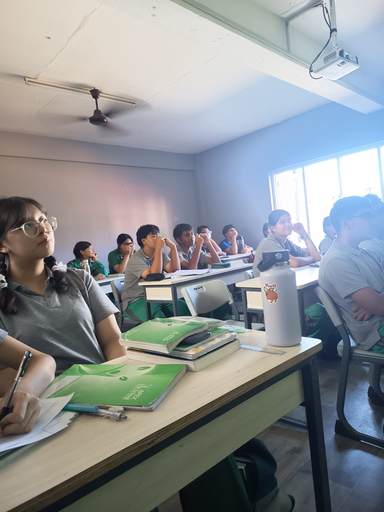
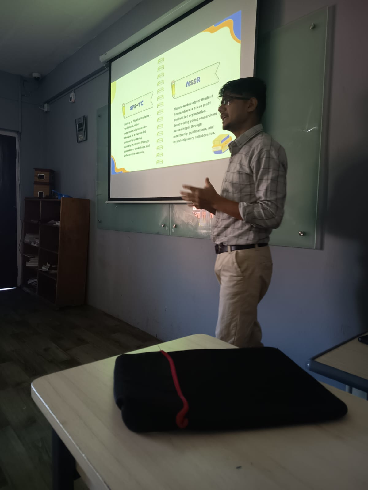
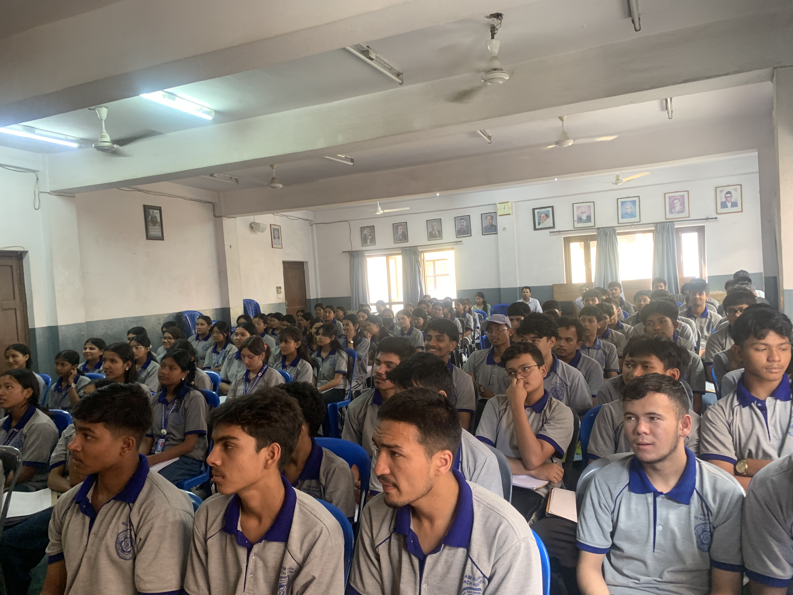
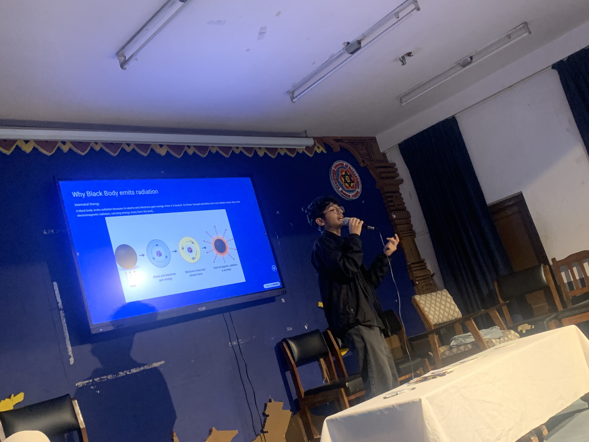

The curiosity is already there. The opportunity is not.
Science Beyond the Classroom is NSSR's one-hour conversation series for students who ask questions the syllabus does not. It brings young researchers into schools and colleges to make research, scientific thinking, and future pathways feel accessible.
The session is free for the school, designed to fit within one class period, and built around conversation rather than exams or grades.
students entering Science after SEE, 2023/24
higher-education Science & Technology share, 2023/24
The question is not whether students are curious about science. It is whether they get enough opportunities to continue.
Go beyond the textbook
Explore real questions, unfamiliar problems, and scientific ideas that do not fit neatly inside a syllabus.
Meet researchers
Hear directly from early-career researchers about curiosity, projects, setbacks, careers, and the path into research.
Keep exploring
Leave with a new question, a clearer pathway, and a connection to NSSR's research community.
The next chapter is growing it.
Nepal is already producing research. SBC helps more students see themselves as part of that future.
Documents
Citations
Citations / document
H-index
Source: SCImago Journal & Country Rank, Country Rankings, 1996-2025, all subject areas.
Empowering young minds through research.
NSSR is a youth-led research organization registered under Company Act 2063. It builds a culture of research, innovation, and scientific collaboration among students in Nepal.
Our work is grounded in inclusivity and accessibility, collaboration, excellence, and integrity, creating a space where students can explore, learn, and contribute.
What makes this different?
In the classroom
Learn established knowledge, follow structured learning, and apply what you know.
Beyond the classroom
Ask meaningful questions, explore unfamiliar problems, and investigate what you discover.
From learning to doing
Learn
Build foundational knowledge.
Question
Ask meaningful questions.
Explore
Investigate new ideas.
Investigate
Analyze real evidence.
Discover
Uncover new insights.
Share
Share your ideas.
Open with a question. Leave with curiosity.
The session begins with a simple question that students can relate to. From there, the speaker builds scientific thinking through stories, examples, discussion, and questions.
Opening question
The talk
Open Q&A
Curiosity to action
60 minutes. Free for the school. Every material funded and prepared by NSSR.
One hour, real rooms.
Sessions have already reached Bagishwori Secondary School, Apex Life School, and Kanya Mandir Secondary School.



